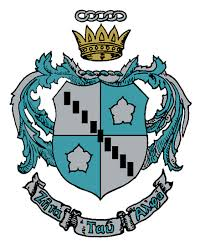

Zeta Tau Alpha Sorority
September 2015 - Present
Zeta Tau Alpha is an international women's fraternity partnered with ThinkPink and the American Cancer Society to promote breast cancer awareness and education

August 2014 - May 2018
Intended Business Administration Major
June 2015 - July 2015
Utilized skills within a team of international school students with background in social/digital marketing, public relations, and web/product development to co-found Shummy, a home cooked meal sharing startup targeted towards college students, at the world largest boot camp for arising Entrepreneurs and Innovators and mentors/investors from the Silicon Valley
September 2010 - June 2014
Student Government, Key Club Service, Forensics Speech, National Honor Society, English National Honor Society, Science National Honor Society, Spanish National Honor Society, Social Studies National Honor Society, Honors Band Program, Randolph High School Wind Ensemble, New Jersey Area Band, Senior Mentor
September 2002 - June 2012
Received the 10 year Diploma for Chinese Language and Literature, Member of the Association of Chinese School Student Honor Society, Chinese Culture Poster Design Competition Eastern Conference- 3rd Place
September 2015 - Present
Will conduct extensive research on the growing t-shirt crowdsourcing industry and existing competitors to offer Teespring with the best recommendations for identifying and targeting consumer markets and having product differentiation

September 2015 - Present
• Will evaluate consumer behavior and customer segments and execute multiple marketing strategies with the San Francisco student cohort to increase the demand/supply of riders and drivers, the amount of sales generated, and brand awareness
February 2015 - May 2015
Conducted extensive industry and market research to estimate the size of the United States online specialty food industry in US dollars by contacting various vendors and formulating market campaigns with various social networking sites/ Evaluated market opportunities and analyze competitive strategies by summarizing competitor business models and defining its value proposition within multiple contexts
September 2011 - May 2014
Planned and spearheaded fundraisers for proms, class events and charities, served as liaison between student body and school administration to improve the spirit of the high school community of 1,400 students/ Professionally collaborated with local companies for sponsors, funding, and participation in students fundraisers to raise over $10,000 for class funds and $16,000 for charities during Spirit Week
September 2015 - Present
Zeta Tau Alpha is an international women's fraternity partnered with ThinkPink and the American Cancer Society to promote breast cancer awareness and education
February 2015 - May 2015
Volunteered at an elementary school in Oakland to assist teacher with classroom activities and provide homework assistance for students